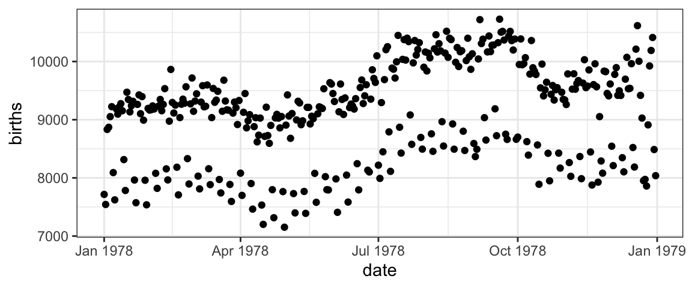
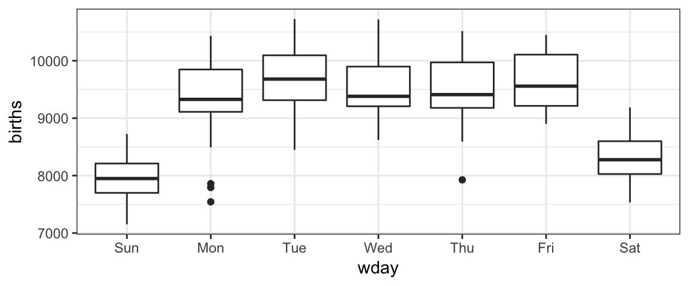

How do we make this plot?
US Births in 1978
Here is an interesting plot showing the number of live births in the United States each day of 1978. We are going to use it to learn how to create plots using the ggformula package.

Two important questions
To get R (or any software) to create this plot (or do anything else, really), there are two important questions you must be able to answer. Before continuing, see if you can figure out what they are.
The Questions
To get R (or any software) to create this plot, there are two important questions you must be able to answer:
1. What do you want the computer to do?
2. What must the computer know in order to do that?
Answers to the questions
To make this plot, the answers to our questions are
1. What do you want the computer to do?
A. Make a scatter plot (i.e., a plot consisting of points)
2. What must the computer know in order to do that?
A. The data used for the plot:
- The variable to be plotted along the \(y\) axis.
- The variable to be plotted along the \(x\) axis.
- The data set that contains the variables.
We just need to learn how to tell R these answers.
Plotting with Formulas
The Formula Template
We will provide answers to our two questions by filling in the boxes of this important template:
goal ( yyy ~ xxx , data = mydata )
We just need to identify which portions of our answers go into which boxes.
The Name of the Game
It is useful to provide names for the boxes:
goal ( y ~ x , data = mydata , …)
These names can help us remember which things go where. (The ... indicates that there are some additional arguments we will add eventually.)
Other versions
Sometimes we will add or subtract a bit from our formula. Here are some other forms we will eventually see.
# simpler version
goal( ~ x, data = mydata )
# fancier version
goal( y ~ x | z , data = mydata )
# unified version
goal( formula , data = mydata ) 2 Questions and the Formula Template
goal ( y ~ x , data = mydata )
Q. What do you want R to do? A. goal
- This determines the function to use.
- For a plot, the function will describe what sorts of marks to draw (points, in our example).
Q. What must R know to do that? A. arguments
- This determines the inputs to the function.
- For a plot, we must identify the variables and the data frame that contains them.
Assembling the pieces
Template
goal ( y ~ x , data = mydata )
Pieces
| box | fill in with | purpose |
|---|---|---|
goal
|
gf_point
|
plot some points |
y
|
births
|
y-axis variable |
x
|
date
|
x-axis variable |
mydata
|
Births1978
|
name of data set |
Exercise
Put each piece in its place in the template below and then run the code to create the plot.
goal(y ~ x, data = mydata)If you get an “object not found” or “could not find function” error message, that indicates that you have not correctly filled in one of the four boxes from the template.
Note: R is case sensitive, so watch your capitalization.
For the record, here are the first few rows of Births1978.
Using formulas to describe plots
The most distinctive feature of ggformula plots is the use of formulas to describe the positional information of a plot. Formulas in R always involve the tilde character, which is easy to overlook. It looks like this:

The position of  on the keyboard varies from brand to brand. On Apple keyboards, it’s here.
on the keyboard varies from brand to brand. On Apple keyboards, it’s here.
Formula shapes
Most gf_ functions take a formula that describes the positional attributes of the plot. Using one of these functions with no arguments will show you the “shape” of the formula it requires.
Exercise
Run this code to see the formula shape for gf_point().
gf_point()You should see that gf_point()’s formula has the shape y ~ x, so the \(y\)-variable name goes before the tilde and the \(x\)-variable name goes after. (Think: “y depends on x”. Also note that the \(y\)-axis label appears farther left than the \(x\)-axis label.)
Exercise
Reverse the roles of the variables – changing births ~ date to date ~ birth – to see how the plot changes.
gf_point(births ~ date, data = Births1978)Exercise
Change date to day_of_year and see how the plot changes. (If you do this on a separate line, you will see both plots at once.)
gf_point(births ~ date, data = Births1978)Changing things up – different data
This tutorial includes similar data sets for the years 1969 to 1988. To use data from a different year, just change the name of the data set to indicate the year.
Exercise
Fill in the “blanks” below to create plots for three different years. To what extent do the patterns from 1978 persist over time?
gf_point(births ~ date, data = Births1978)
gf_point(births ~ date, data = Births____)
gf_point(births ~ date, data = __________)(Note: This creates three separate plots. We will learn how to combine them into a single plot shortly.)
Changing things up – different types of plots
Our plots have points because we have used gf_point(). But there are many other gf_ functions that create different types of plots.
Exercise
Experiment with some other plot types by changing gf_point() to one of the following:
gf_line(): connect the dotsgf_smooth(): smoothed version ofgf_line()gf_lm(): regression line (same asgf_smooth()withmethod = "lm")gf_spline(): another type of smoother (using splines)
gf_point(births ~ date, data = Births1978)Changing things up – gf options
If you created the spline plot, you probably found it “too wiggly”. If you created the smoothed plot, you might prefer that the gray bands not be displayed. For any of these plots you might have preferred different colors or sizes of things. Such global characteristics of a plot can be adjusted with additional arguments to the gf_ function. These go in the ... part of the template.
goal ( y ~ x , data = mydata , …)
The general form for these is option = value.
For example,
spar = 0.5(or any number between 0 and 1) controls the amount of smoothing ingf_spline().se = TRUE(note capitalization) turns on the “error band” ingf_smooth()andgf_lm().color = "red"orfill = "navy"(note quotes) can be used to change the colors of things. (fillis typically used for regions that are “filled in” andcolorfor dots and lines.)alpha = 0.5(or any number between 0 and 1) will set the opacity (0 is completely transparnt and 1 is completely opaque).
Exercises
Here are some examples. Adjust some of the options to see how things change. We’ve inserted some line breaks to make the options easier to locate in the code.
gf_spline(births ~ date, data = Births1978,
spar = 0.5,
color = "navy")gf_smooth(births ~ date, data = Births1978,
se = TRUE,
color = "red")gf_point(births ~ date, data = Births1978,
size = 3, shape = 18,
alpha = 0.5, color = "purple")What attributes are available?
You can learn about the attributes available for a given layer using the “quick help” for a layer function. You can find out more by reading the help file produced with ?.
# "quick help" for gf_point()
gf_point()What are the color names?
Curious to know all the available color names? Run this code.
colors()Multiple layers with %>%
We said that gf_point() creates a plot with points. This isn’t quite true. Technically, it creates a layer with points. A plot may have multiple layers. To create a multi-layered plot, simply append %>% at the end of the code for one layer and follow that with another layer.
Exercise
- If you run the following code as is, you will get three separate plots.
- Combine these three layers into a single plot by appending
%>%at the end of the first two lines. - That’s pretty ugly. Now change the x-axis variable to
day_of_yearso that all three years are aligned. - If you like, change the plot type to
gf_smooth()orgf_spline().
gf_point(births ~ date, data = Births1978, color = "navy")
gf_point(births ~ date, data = Births1969, color = "red")
gf_point(births ~ date, data = Births1988, color = "skyblue")Mapping attributes
The births data in 1978 contains two clear “waves” of dots. One conjecture is that these are weekdays and weekends. We can test this conjecture by putting different days in different colors.
In the lingo of ggformula, we need to map color to the variable wday. Mapping and setting attributes are different in an important way.
color = "navy"sets the color to “navy”. All the dots will be navy.color = ~ wdaymaps color towday. This means that the color will depend on the values ofwday. A legend (aka, a guide) will be automatically included to show us which days are which.
Exercise
Change the color argument so that it maps to
wday. Don’t forget the tilde (~).Try some other plot types:
gf_line(),gf_smooth(), etc. Which do you like best? Why?
gf_point(births ~ date, data = Births1978, color = "navy")Facets
If we want to look at all 20 years of birth data, overlaying the data is likely to put too much information in too little space and make it hard to tell which data is from which year. (Deciphering 20 colors or 20 shapes can be hard, too.) Instead, let’s put each year in separate facet or sub-plot. Facets are better than 20 separate plots because the coordinate systems are shared across the facets which saves space and makes comparisons across facets easier.
There are two ways to create facets. The simplest way is to add a vertical bar | to our formula.
gf_point(births ~ day_of_year | year, data = Births, size = 0.5)The second way is to add on a facet command using %>%:
gf_point(births ~ day_of_year, data = Births, size = 0.5) %>%
gf_facet_wrap( ~ year)Exercise
Edit one of the plots above to do the following:
- map color to
wday - change from points to lines or one of the smoothers
Exercise
Now edit one the plots above to
- remove the facets, and
- use
dateinstead ofday_of_year
What advantage do we get from using facets in this case?
Facet Grids and Facet Wraps
The faceting we did on the previous page is called facet wrapping. If the facets don’t fit nicely in one row, the facets continue onto additional rows.
A facet grid uses rows, or columns, or both in a fixed way.
gf_point(births ~ day_of_year | year ~ wday, data = Births, size = 0.5)Exercise
Recreate the plot above using gf_facet_grid(). This works much like gf_facet_wrap() and accepts a formula with one of three shapes
y ~ x(facets along both axes)~ x(facets only along x-axis)y ~ .(facets only along y-axis; notice the important dot in this one)
(These three formula shapes can also be used on the right side of |.)
Plots with one positional variable
Some gf_ functions only require the user to supply one variable. The y-positions for these plots can calculated from the x-variable.
Here are two examples. Run the code below to see the formula shapes used by these plots.
gf_histogram()
gf_density()Notice that when there is only one variable it is always on the right side. Other examples of functions that take just one variable include gf_dens(), gf_freqpoly(), gf_dotplot(), gf_bar(), and gf_qq().
Exercise
Create some “one-variable” plots using the functions listed above and the template below. Which variable should you use?
gf____( ~ _____, data = Births1978)Your Turn
Time to explore on your own. Here are three data sets you can use.
HELPrcthas data from a study of people addicted to alcohol, cocaine, or heroineKidsFeethas information about some kids’ feet.NHANEShas lots of physiologic and other measurements from 10,000 subjects in the National Health and Nutrition Evaluation Survey. (This data set will only be available if the NHANES package is installed where this tutorial is running.)
To find out more about the data sets use ?HELPrct, ?KidsFeet, or ?NHANES. To see the first few rows of the data, you can use head().
To get a list of functions available in ggformula, run this code chunk.
# list all functions starting gf_
apropos("gf_")Exercise.
Make some plots to explore one or more of these data sets.
- Experiment with different types of plots.
- Use mapping and/or facets to reveal groups.
- You can put more than one plot in a code chunk, but we’ve provided two chunks in case you want to separate your work that way. Use one chunk for experimenting and copy and paste your favorites to the other chunk if you like.
gf_point(length ~ width, data = KidsFeet)
head(KidsFeet)
?KidsFeetCreating data summaries with df_stats()
df_stats() works much like the plotting functions in ggformula but it produces a data frame of summary information rather than a plot. These summary data frames can be useful for plotting or for obtaining some numerical precision for the patterns we see in our plots.
Consider this plot 
We can see clear trends, but what if we want to know the mean and standard deviation, or the median and IQR for the number of births on each of the seven weekdays?
Exercise
Change gf_boxplot() to df_stats().
gf_boxplot(births ~ wday, data = Births1978)The default use of df_stats() computes some of the most common summary statistics. But we can use df_stats() to create other numerical summaries as well.
df_stats(births ~ wday, data = Births1978, median, iqr)Exercise
Modify the code above to compute some other summaries of your choosing.
Chaining with df_stats()
Births1978 %>%
df_stats(births ~ wday, median, iqr)Combining with plots
In addition to the usual plot elements (lines, points, etc.), sometimes it is useful to add text with gf_text() or gf_label().
See if you can figure out what this does before your execute it.
Births_summary <-
df_stats(births ~ wday, data = Births1978)
gf_boxplot(births ~ wday, data = Births1978) %>%
gf_point(mean ~ wday, color = "red", data = Births_summary) %>%
gf_label(6400 ~ wday, label = ~ round(median), data = Births_summary) %>%
gf_text( 6700 ~ wday, label = ~ round(mean), data = Births_summary,
color = "red")Where do we go from here?
If you are fussy about your plots, you may be wondering how to have more control over things like:
- the colors, shapes, and sizes chosen when mapping attributes
- labeling, including titles and axis labels
- fonts, colors, and sizes of text
- color of plot elements like background, gridlines, facet labels, etc.
As you can imagine, all of these things can be adjusted pretty much however you like. But we’ll save that for a separate tutorial on customizing your plots.
A quick anatomy lesson
Not biological anatomy, rather plot anotomy. In order to talk about plots, it is handy to have words for their various components.
A frame is the bounding rectagle in which the plot is constructed. This
is essentially what you may think of as the x- and y- axes, but the plot isn’t actually required to have visible “axes”.glyphs or marks are the particular symbols placed on the plot (examples: dots, lines, smiley faces, your favorite emoji, or whatever gets drawn).
Each glyph has a number of attributes or properties.
- These always include position (you have to put them somewhere).
- Other attributes incude things like size, color, shape.
- Not all glyphs have the same attributes (points have shape, but lines do not, for example).
scales map raw data over to attributes of the plot.
guides go in the other direction and help the human map graphical attributes back to the raw data. Guides include what you might call a legend, but also things like axis labeling.
facets are coordinated subplots.